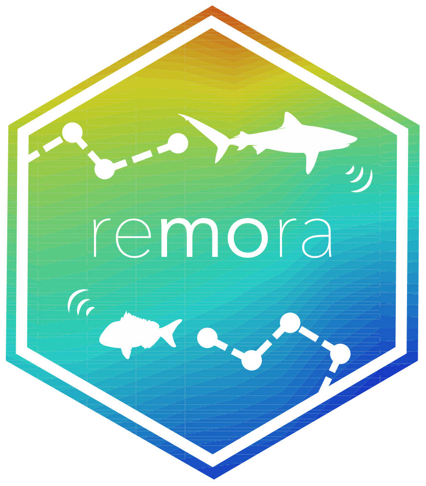
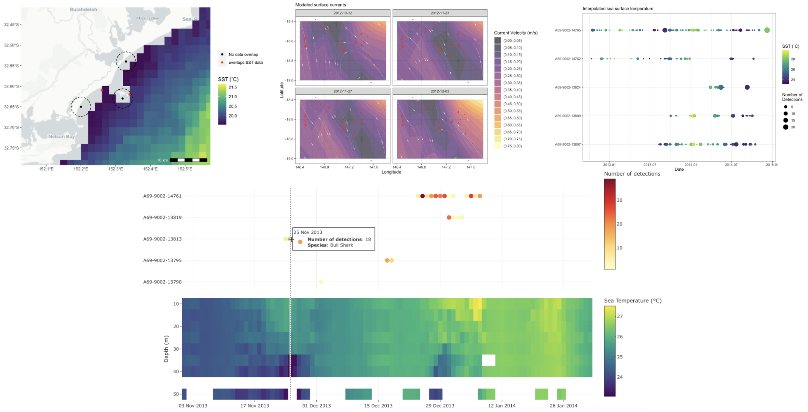
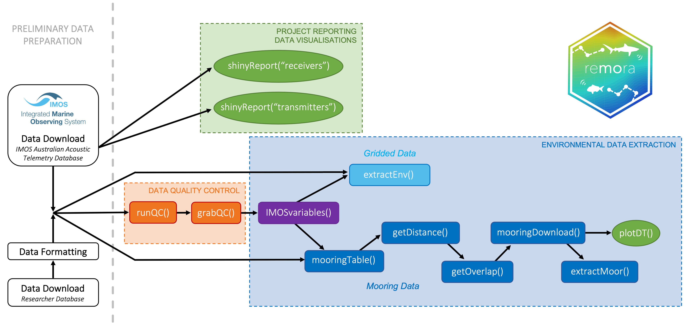
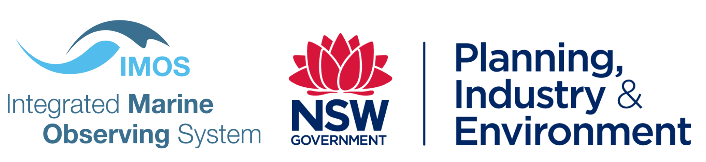

remora
An R package to facilitate the Rapid Extraction of Marine Observations for Roving Animals
Overview • Installation • Key functionalities • Issues • Contributions • Acknowledgements • Data accessibility • Licence

Overview
remora is an R package enabling the integration of animal acoustic telemetry data with oceanographic observations collected by ocean observing programs. It includes functions for:
- Interactively exploring animal movements in space and time from acoustic telemetry data
- Performing robust quality-control of acoustic telemetry data as described in Hoenner et al. 2018
- Identifying available satellite-derived and sub-surface in situ oceanographic datasets coincident and collocated with the animal movement data, based on regional Ocean Observing Systems
- Extracting and appending these environmental data to animal movement data
Whilst the functions in remora were primarily developed to work with acoustic telemetry data, the environmental data extraction and integration functionalities will work with other spatio-temporal ecological datasets (eg. satellite telemetry, species sightings records, fisheries catch records).
Installation
remora requires R version >= 3.6.0
You will need the remotes package to install remora:
install.packages("remotes")
library("remotes") The latest stable version of remora can be installed from GitHub:
remotes::install_github('IMOS-AnimalTracking/remora', build_vignettes = TRUE)Key functionalities

A set of functions within the remora workflow allow users to run each of the below functionalities independently, as required.
- Interactive visualisation of data associated with an acoustic telemetry receiver array
- Interactive visualisation of data associated with an acoustic telemetry tagging project
- Quality control of acoustic telemetry data
- Integration with remotely-sensed or gridded environmental data
- Integration with in situ sub-surface oceanographic moooring data
The vignettes for each functionality can be accessed in R using the following code:
browseVignettes(package = "remora")What to do if you encounter a problem
If you are convinced you have encountered a bug or unexpected/inconsistent behaviour when using remora, you can post an issue here. First, have a read through the posted issues to see if others have encountered the same problem and whether a solution has been offered. You can reply to an existing issue if you have the same problem and have more details to share or you can submit a new issue.
To submit an issue, you will need to clearly describe the issue, include a reproducible example, describe what you expected to happen (but didn’t), and provide screenshots/images that illustrate the problem.
How to Contribute
Contributions from anyone in the Movement Ecology/Acoustic Telemetry communities are welcome. Consider submitting a feature request here to start a discussion. Alternatively, if your idea is well-developed then you can submit a pull request for evaluation here.
Acknowledgements

This work was funded by Australia’s Integrated Marine Observing System (IMOS, www.imos.org.au) and a Research Attraction and Acceleration Program grant from the Office of the New South Wales Chief Scientist & Engineer awarded to Sydney Institute of Marine Science. IMOS is enabled by the National Collaborative Research Infrastructure Strategy (NCRIS). It is operated by a consortium of institutions as an unincorporated joint venture, with the University of Tasmania as Lead Agent.
We thank Michelle Heupel, Colin Simpfendorfer and Paul Butcher for allowing us access to the following sample datasets to aid code development.
Heupel, M., Simpfendorfer, C. et al. (2021) Townsville Reefs (Available: Integrated Marine Observing System. Animal Tracking Database. https://animaltracking.aodn.org.au. Accessed: 2021-10-11).
Butcher, P. et al. (2021) NSW DPI (Whaler, White and Tiger Shark Program). NSW Department of Primary Industries. (Available: Integrated Marine Observing System. Animal Tracking Database. https://animaltracking.aodn.org.au. Accessed: 2021-10-11).
Data accessibility
Continental-scale acoustic telemetry data collated as part of Australia’s Integrated Marine Observing System (IMOS) are available via the IMOS Australian Animal Acoustic Telemetry Database.
Environmental and oceanographic datasets are available from the IMOS Australian Ocean Data Network.
Licence
 GNU General Public License (GPL>=3) https://www.gnu.org/licenses/gpl-3.0.en.html
GNU General Public License (GPL>=3) https://www.gnu.org/licenses/gpl-3.0.en.html
Citation:
Jaine, F., Jonsen, I., Udyawer, V., Dwyer, R., Scales, K., Maron-Perez, F., Hoenner, X., Huveneers, C and Harcourt, R. remora: An R package to facilitate Rapid Extraction of Marine Observations for Roving Animals. In preparation for publication in Methods in Ecology and Evolution. DOI:10.5281/zenodo.5763976. https://imos-animaltracking.github.io/remora/
Contributors:
Fabrice Jaine @fjaine (IMOS Animal Tracking Facility, Sydney Institute of Marine Science)
Ian Jonsen @ianjonsen (IMOS Animal Tracking Facility, Macquarie University)
Vinay Udyawer @vinayudyawer (Australian Institute of Marine Science)
Ross Dwyer @RossDwyer (University of the Sunshine Coast)
Kylie Scales @KScales (University of the Sunshine Coast)
Francisca Maron @fmaron (IMOS Animal Tracking Facility, Sydney Institute of Marine Science)
Xavier Hoenner @xhoenner (Commonwealth Scientific and Industrial Research Organisation)
Charlie Huveneers @huve0001 (Flinders University)